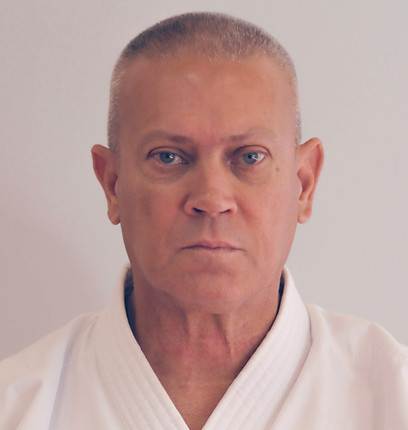
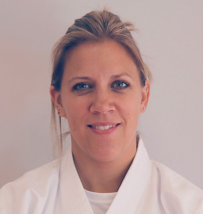
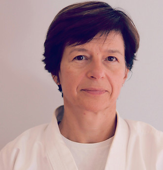

Le style Shorinji Ryu (少林寺流) s'inscrit au cœur des traditions originelles du Karaté d'Okinawa. Son nom rend hommage au temple Shaolin (Shorin-ji en japonais, « École du temple de la jeune forêt »), rappelant la synthèse séculaire entre les arts du poing chinois et les méthodes de défense autochtones okinawaïennes (le Te).
Héritier direct des courants Shuri-Te et Tomari-Te, le Shorinji Ryu a été façonné par de légendaires figures martiales telles que Matsumura Sōkon (garde du corps des rois de Ryukyu) et Kyan Chōtoku. Il se distingue par l'apprentissage de katas authentiques préservés dans leur forme la plus pure.
Au XXe siècle, le grand maître et historien Richard Kim (10e Dan, 1917-2001) a structuré la transmission de l'école (Kokusai Shorinjiryu Karatedo). Il a unifié l'étude des frappes à mains nues, des armes anciennes du Kobudo et de la maîtrise du souffle (Tai Chi / Chi Kung).
Contrairement aux styles axés sur des postures figées ou la compétition sportive, le Shorinji Ryu privilégie des positions naturelles et mobiles (Shizentai), des esquives rapides, la précision des frappes sur les points vitaux et une efficacité martiale sans concession.
Dans notre école, la pratique martiale n'a jamais pour but l'agressivité. Elle est conçue comme un outil d'élévation personnelle, de paix intérieure et de solidarité entre pratiquants.
« Le Karaté commence et se termine par le salut ». Le respect du partenaire, du maître et du dojo constitue le pilier fondamental de chaque séance.
« Karaté ni sente nashi » : il n'y a pas de première attaque en karaté. L'art martial sert exclusivement à défendre sa vie et à protéger les faibles.
La forge du caractère s'effectue dans la répétition inlassable du geste juste (Tanren), surmontant la fatigue et les difficultés avec humilité.
Garder un esprit calme face à l'imprévu. L'équilibre entre Karaté, maniement des armes et Tai Chi Chuan favorise l'harmonie du corps et de l'esprit.
Hommage solennel aux maîtres qui ont fondé et bâti l'école Arts Martiaux de Brunoy, et présentation de notre Sensei actuelle assurant la direction technique.

Ancien Maître (6e Dan)
Fondateur & Maître méritant du club. Pionnier de la transmission du Karaté traditionnel style Shorinji Ryu en Essonne, il a formé des générations de ceintures noires avec dévouement, exigence et bienveillance.

Ancienne Maître (5e Dan)
Figure emblématique de l'école des Arts Martiaux de Brunoy. Elle a grandement œuvré à la transmission spirituelle, à la précision technique et à la dimension humaine de l'enseignement au sein de notre dojo.

Notre Sensei Actuelle (4e Dan)
Direction technique du club. Professeure référente de Karaté et de Tai Chi Chuan à Brunoy. Elle perpétue aujourd'hui fidèlement la tradition et l'esprit d'ouverture de l'AMB au Gymnase Pierre de Coubertin.
Que vous soyez débutant ou pratiquant confirmé, notre équipe vous accueille pour un cours d'essai gratuit au Gymnase Pierre de Coubertin à Brunoy.